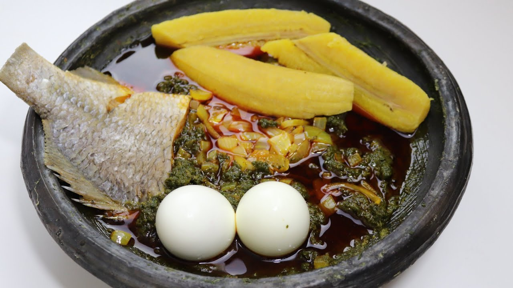

AMPESI WITH PALAVA SAUCE

WHAT YOU NEED(INGREDIENT)
AMPESI
- 1 tuber yam
- 3 pieces unripe Plantian
- 2 tbsp salt
Palava Sauce
- 250 ml (8 fl oz) palm oil
- 3 medium onions, finely chopped / chunkily chopped
- 3 large tomatoes, blanched, peeled and mashed
- Salt and pepper to taste (2 red/green chillies, ground)
- 250 g (1/2 lb) diced cooked meat or 250 g (1/2 lb) fish ( e.g. snapper, tuna or salmon)
- 3 bunches of spinach (sliver beet) or 750 g (1-1/2 lb) frozen spinach (silver beet), washed and chopped
- 100 g (3-1/2 oz) egushi (ground shelled pumpkin seeds or pepitas)
PREPARATION
Ampesi
- Peel yam, cocoyam into a cooking pot.
- Wash them thoroughly and put into another cooking pot.
- Half fill the cooking pot with water
- Peel your unripe plantain, wash them and arrange them on top of the yam and cocoyam
- Add reasonable amount of salt
- Boil over high heat for about 10 minutes.
- Pour out the water and set aside
- The ampesi is ready
Palava Sauce
- Pour palm oil in a saucepan add onions when oil is fairly hot. Fry the onions until golden.
- Add the tomatoes, pepper to taste.
- Add salt to taste with your choice of diced, cooked meat & fish. Simmer on a low heat, stirring regularly to prevent burning.
- Add the spinach (silver beet) to the meat mixture. Cover and simmer on low heat for 10 to 15 minutes or until the spinach is soft & cooked. Stir regularly, taking care not to break too much of the fish.
- Add the egushi (pumpkin seeds) and stir them into the sauce. Cook for a further 10-15 minutes on low heat.
- Serve hot with boiled rice, yams, plantains.
Back to Home Page